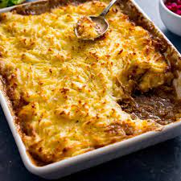

Simple Shepherds Pie

A quick and delicious, family favourite, shepherds pie
INGREDIENTS
- 1 tbsp sunflower oil
- 1 large onion, chopped
- 2-3 medium carrots, chopped
- 500g pack lamb mince
- large splash Worcestershire sauce
- 500ml beef stock
- 900g potatoes, cut into chunks
- 85g butter
- 3 tbsp milk
METHOD
- Heat 1 tbsp sunflower oil in a medium saucepan, then soften 1 chopped onion and 2-3 chopped carrots for a few mins.
- When soft, turn up the heat, crumble in 500g lamb mince and brown, tipping off any excess fat.
- Add 2 tbsp tomato purée and a large splash of Worcestershire sauce, then fry for a few mins.
- Pour over 500ml beef stock, bring to a simmer, then cover and cook for 40 mins, uncovering halfway.
- Meanwhile, heat the oven to 180C/fan 160C/gas 4, then make the mash. Boil the 900g potato, cut into chunks, in salted water for 10-15 mins until tender. Drain, then mash with 85g butter and 3 tbsp milk.
- Put the mince into an ovenproof dish, top with the mash and ruffle with a fork. The pie can now be chilled and frozen for up to a month.
- Bake for 20-25 mins until the top is starting to colour and the mince is bubbling through at the edges. (To bake from frozen, cook at 160C/fan 140C/gas 3 for 1 hr-1 hr 20 mins until piping hot in the centre. Flash under the grill to brown, if you like.)
- Leave to stand for 5 mins before serving.